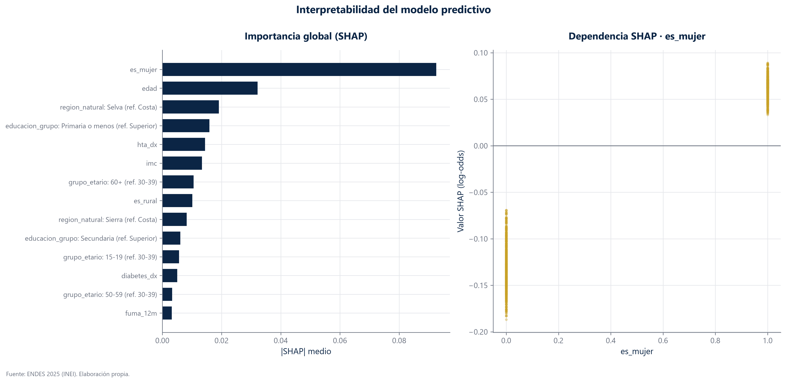
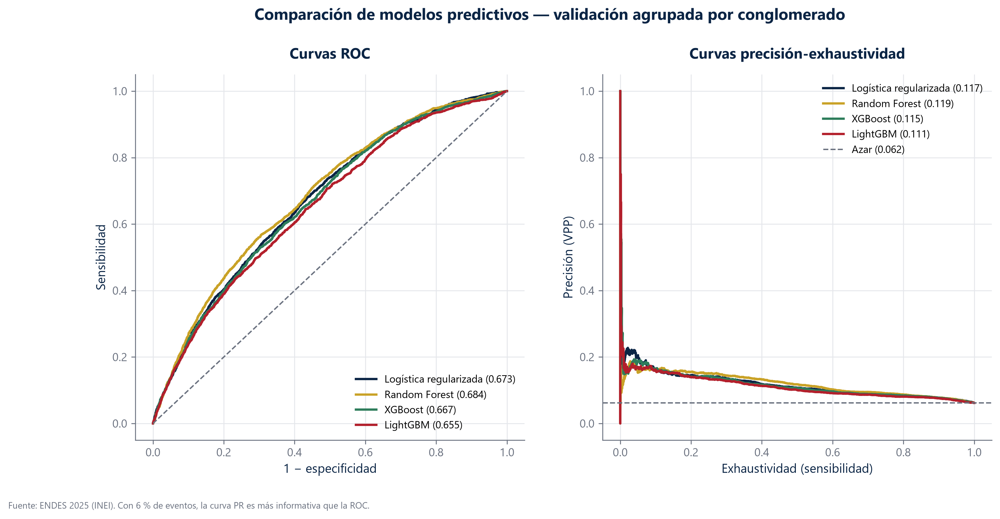

Modelo y realidad: dos rankings que no coinciden
El factor con el efecto más fuerte del estudio es casi inútil para predecir. No es una contradicción: es que estábamos midiendo dos cosas distintas.
Además del modelo epidemiológico entrenamos algoritmos de aprendizaje automático —bosques aleatorios, XGBoost, LightGBM— y les preguntamos qué variables usan para decidir. La técnica se llama SHAP y reparte la responsabilidad de cada predicción entre las características de la persona.
Esperábamos que su ranking se pareciera al de los odds ratios. Coinciden en un 35 %.
El consumo problemático de alcohol es el primero por efecto y el decimoquinto por utilidad predictiva
El sexo domina el panel de la izquierda con el 37 % de la importancia; el alcohol problemático apenas aparece. Y sin embargo su odds ratio es 6,07, el más alto del estudio. La explicación está en el denominador: afecta a 304 personas de 28 553. Un efecto enorme sobre muy poca gente casi no mueve la predicción media. El sexo es lo contrario: un efecto moderado sobre media población.
- Cada barra mide cuánto usa el modelo esa variable, en promedio, para decidir.
- No mide si la variable es importante para la salud: mide si ayuda a adivinar.
- Una variable puede tener un efecto grande y una barra pequeña, si afecta a poca gente.

| Variable | Puesto por efecto | Puesto por utilidad predictiva | Odds ratio |
|---|---|---|---|
| es_mujer | 2 | 1 | 2.94 |
| region_natural: Selva (ref. Costa) | 7 | 3 | 0.67 |
| educacion_grupo: Primaria o menos (ref. Superior) | 8 | 4 | 1.48 |
| hta_dx | 9 | 5 | 1.45 |
| grupo_etario: 60+ (ref. 30-39) | 4 | 7 | 1.67 |
| es_rural | 15 | 8 | 0.84 |
| region_natural: Sierra (ref. Costa) | 16 | 9 | 1.13 |
| educacion_grupo: Secundaria (ref. Superior) | 12 | 10 | 1.29 |
| grupo_etario: 15-19 (ref. 30-39) | 3 | 11 | 2.11 |
| diabetes_dx | 10 | 12 | 1.41 |
Por qué esto importa
Porque llevan a decisiones opuestas y las dos son legítimas.
- Si la pregunta es «¿sobre qué conviene intervenir?», manda el efecto. Una intervención sobre el consumo problemático de alcohol tendría un impacto grande en quienes lo padecen.
- Si la pregunta es «¿a quién priorizo con recursos limitados?», manda la utilidad predictiva. Ahí el sexo, la edad y la región ordenan mejor a la población.
Confundirlas lleva a error en las dos direcciones: descartar una exposición relevante porque no predice bien, o priorizar una intervención sobre una variable que solo predice bien porque es frecuente.
Cuatro algoritmos, prácticamente el mismo resultado
Bosque aleatorio, XGBoost, LightGBM y una regresión logística regularizada se mueven todos entre 0,65 y 0,68 de AUC. Cuando cambiar de algoritmo no cambia el resultado, el techo no está en el algoritmo: está en lo que las variables disponibles pueden decir. La curva de la derecha es la honesta con un 6 % de casos.

| Modelo | AUC-ROC | AUC-PR | Sensibilidad | Especificidad |
|---|---|---|---|---|
| Logística regularizada | 0.67 | 0.12 | 0.15 | 0.94 |
| Random Forest | 0.68 | 0.12 | 0.16 | 0.94 |
| XGBoost | 0.67 | 0.12 | 0.15 | 0.94 |
| LightGBM | 0.66 | 0.11 | 0.15 | 0.94 |
| Modelo trivial (predice 'nadie') | 0.50 | 0.06 | 0.00 | 1.00 |